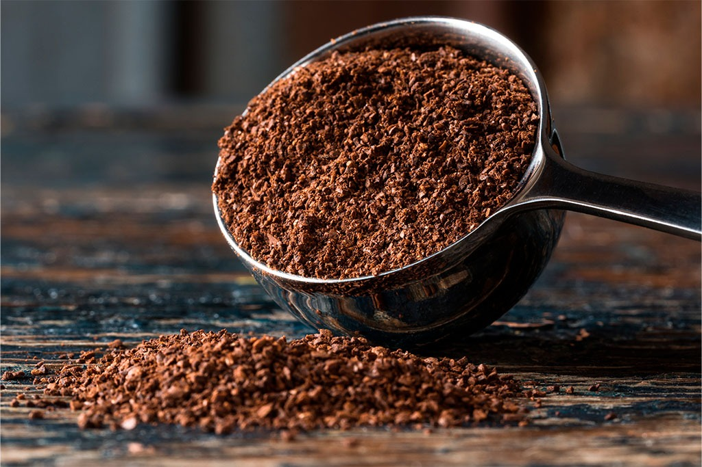

Preparar una buena taza de café instantáneo es rápido y sencillo. Sigue estos pasos para disfrutar de una bebida deliciosa en cuestión de minutos.

☕ Ingredientes y Utensilios:
- Café instantáneo: Tu marca y tipo favorito (granulado, en polvo, descafeinado, etc.).
- Agua: Preferiblemente filtrada para un mejor sabor.
- Taza: Tu taza favorita.
- Cuchara: Para medir el café y revolver.
- Opcional: Leche, azúcar, etc.
📝 Pasos para Preparar tu Café:
-
Hierve el agua: Calienta la cantidad de agua que necesitas para tu taza. Puedes usar una tetera eléctrica, una olla en la estufa o incluso un microondas. La temperatura ideal es justo antes de que el agua hierva por completo (unos 90-96°C).
-
Mide el café: Vierte la cantidad deseada de café instantáneo en tu taza. La regla general es una o dos cucharaditas por cada 240 ml (8 oz) de agua, pero ajústalo a tu gusto.
-
Añade una pequeña cantidad de agua caliente (opcional, para café más fuerte): Si te gusta un café más intenso y sin grumos, puedes añadir solo una cucharada de agua muy caliente al café instantáneo y mezclar hasta formar una pasta. Esto ayuda a disolverlo mejor.
-
Vierte el resto del agua: Con cuidado, vierte el agua caliente restante sobre el café instantáneo en tu taza.
-
Revuelve bien: Con la cuchara, revuelve el café hasta que todo el café instantáneo se haya disuelto por completo y no queden grumos.
-
Personaliza tu café: Este es el momento de añadir lo que desees: leche (fría o caliente), azúcar, edulcorante, un toque de canela o cacao en polvo.
-
¡Disfruta! Tu taza de café instantáneo está lista para ser saboreada.
💡 Consejos para un Café Instantáneo Aún Mejor:
- No uses agua hirviendo: El agua a 100°C puede "quemar" el café instantáneo, dándole un sabor amargo. Deja que hierva y luego repose 30 segundos antes de usarla.
- Almacena bien tu café: Guarda el café instantáneo en un recipiente hermético en un lugar fresco y seco para mantener su frescura.
- Experimenta con las proporciones: No hay una regla única. Prueba diferentes cantidades de café y agua hasta encontrar tu punto ideal.
- Considera la calidad: Aunque es instantáneo, la calidad del café base importa. Invierte en una buena marca si quieres un mejor sabor.
¡Que disfrutes tu café!